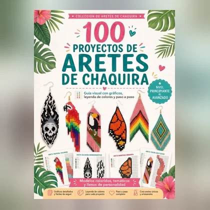
Responde 5 preguntas y descubre si tienes el perfil para ganar dinero haciendo aretes en casa 💸
⏰ 2 minutos · sin registro
Gratis y sin compromiso
Un momento, estamos armando tu resultado.
De lejos un arete de chaquira parece difícil. De cerca es otra cosa: es seguir un dibujo.
Cada cuadrito del gráfico es una chaquira, y el color del cuadrito es el color que va ahí. No hay nada que adivinar ni que calcular.
Quien hace aretes bonitos no tiene un don especial — tiene el gráfico en la mano. Eso es todo.
Esta es la cuenta real de un par de aretes de chaquira:
Un par se hace en 40 minutos a una hora. Con menos de US$ 15 de material haces decenas de pares — y el material te alcanza para mucho más de lo que imaginas.
Por eso las chaquiras son de los pocos trabajos desde casa donde lo que inviertes vuelve con la primera venta.
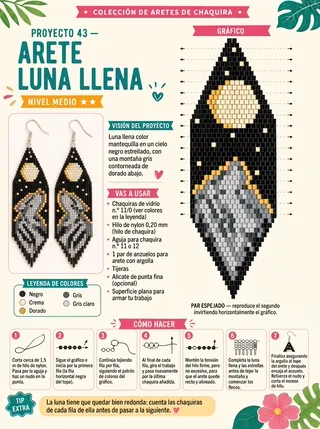
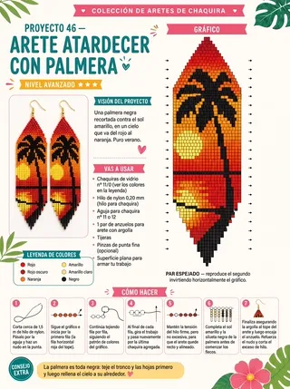
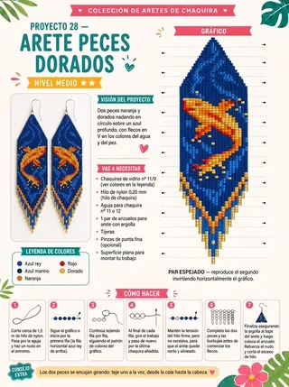
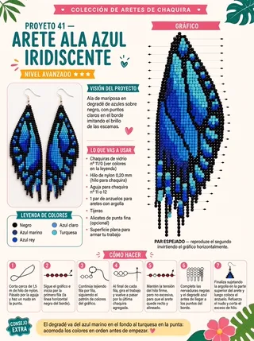
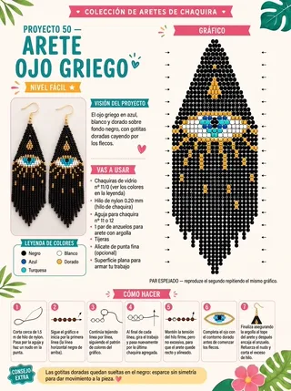
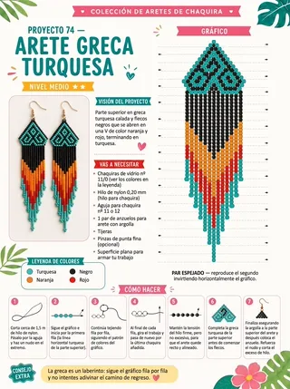
Así llega cada uno de los 100 proyectos: gráfico, leyenda y paso a paso en una página.
Cada proyecto es una página completa: la foto del arete terminado, el gráfico a color, la leyenda, la lista de materiales y 7 pasos ilustrados del primer nudo al remate.
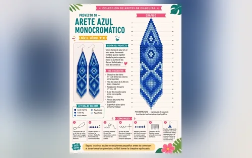
Lo que separa una pieza que parece casera de una que parece comprada.
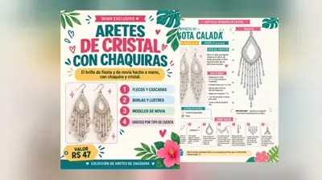
Flecos, borlas y cascadas con brillo de fiesta. US$ 12 → gratis
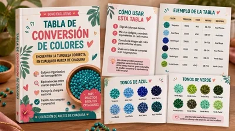
Qué turquesa comprar, con la referencia de cada marca. US$ 9 → gratis
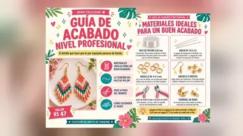
Tensión, remate que no se suelta y cómo esconder el nudo. US$ 12 → gratis
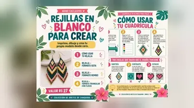
Para dibujar tus propios gráficos. US$ 7 → gratis
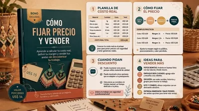
El costo real, el margen y qué responder si te piden descuento. US$ 14 → gratis
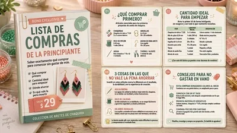
Qué comprar, cuánto, y en qué no conviene ahorrar. US$ 7 → gratis
Colección Completa
De US$ 39,90 por
US$ 9,90
pago único · acceso inmediato · de por vida
QUIERO LA COLECCIÓN COMPLETAPago seguro por Hotmart · garantía de 7 días
No. Hay 15 proyectos de nivel fácil pensados para quien nunca tocó una chaquira. Cada paso viene dibujado.
Menos de US$ 5 alcanzan para los primeros pares: chaquira, hilo de nylon, aguja y los anzuelos. El bono 6 te dice exactamente qué comprar.
Apenas se aprueba el pago te llega un correo con el enlace del área de miembros. Entras con el mismo correo que usaste en la compra, sin contraseña.
Sí. Cada proyecto es una página en A4, lista para imprimir o para ver en el celular.
Sí, las piezas que hagas son tuyas para usar, regalar o vender. Lo que no se puede es revender el material del curso.
Tienes 7 días de garantía. Escribes y te devolvemos el 100%, sin preguntas.
Chaquiras de Juh · ¿Dudas? support@htguias.com
Este sitio no tiene relación con Facebook ni con Meta.